- 00000018WIA30B53E20GYZ
- id_131069273.0
- Aug 29, 2019 1:38:52 AM
Peripheral Diagnostics
Diagnostics are available to check most parts of the system. The following sections describe these tests. This information is also available from the hyper-linked test names on the MR system (see Section 1 of Diagnostic Test Theory and Help Information).
| Last updated | 04/20/2005 |
CAN Link Diagnostic
This diagnostic tests the functionality of all the devices on the CAN link. This diagnostic first detects all the available nodes (in this case the Driver Control Module) on the CAN link by monitoring the Node Guarding messages. Once any nodes are detected, they are logged to the screen and then a data path test is run on each of them sequentially. The data path test consists of writing a walking one’s pattern on the Diagnostic Dictionary Index on the node and reading it back. The received data is checked to ensure its validity. The data path test is repeated three times on each node. Any errors will result in an error message logged and the information written to the screen. See Figure 1.
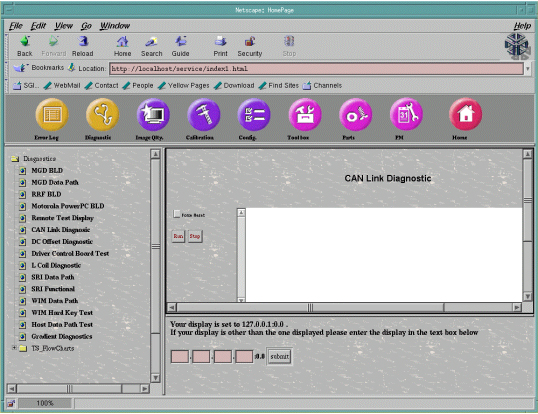
-
The Force Reset button will reset the CAN Link.
-
The Run button will start the execution of the diagnostic.
-
The Stop button will end execution of the diagnostic.
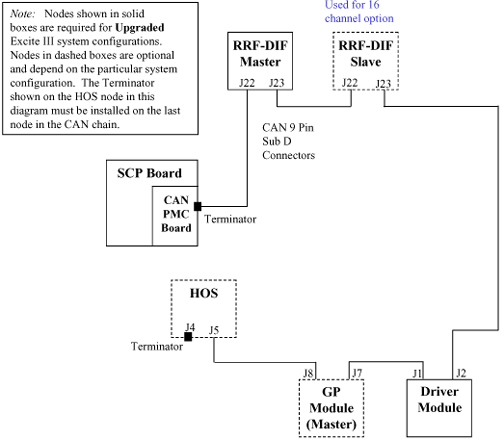
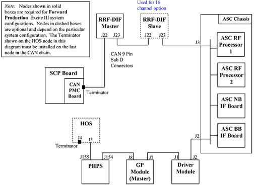
Driver Control Module BLD Tests
These diagnostics provide the ability to test the functionality of the Driver Control Module and components within this module. See Figure 4. Refer toTable 1 for test descriptions.

DCB Power Supply Data
Figure 5 provides a display of what results should normally be seen. Note that all passing results are displayed in blue. Failing results are displayed in red. All passing results should be displayed in blue.

DCB IO Status
Figure 6 provides an example display of what should be seen when running this diagnostic in Product Configuration. Again, normally all the results should be displayed in blue. Any failing results will be displayed in red. Don’t assume that failures reported here automatically mean that the Driver Module should be replaced. Try removing output cables to the Driver Module and run the diagnostic again. See if the results have changed. If they have, the problem may be external to the Driver Module.

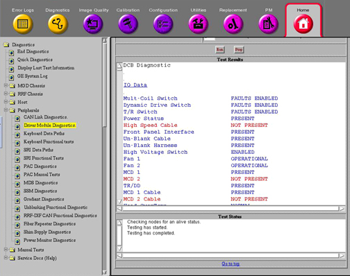
Refer to Table 1 for a description of the remaining tests.
| TEST NAME | TEST DESCRIPTION | ||
| Power Supply Data | This diagnostic reads the Power Supply information from the DCB board every 5 seconds for the specified Test Duration (max 300 secs). The values are checked against the tolerances listed in the DcbConfig.cfg file. Any failing values will be printed out in red. Passing values will be printed out in blue. No error messages will be logged for failing power supplies since the Applications Code will be logging these errors automatically. See sample screen and comments in Diagnostic Tests. | ||
| I/O Status | This diagnostic reads the I/O Bit map information from the DCB board every 5 seconds for the specified Test Duration (max 300 secs). Each polled item and its status is printed in the window. Status messages displayed in red indicate an abnormal condition. See sample screen and comments in Diagnostic Tests and descriptions in the table below. | ||
| Test | Test Purpose | Nominal Result | |
| Multi-Coil Switch | Check position of Switch SW 4 MC ENABLE | FAULTS ENABLED | |
| Dynamic Drive Switch | Check position of Switch SW 3 DD ENABLE (not used on Driver Modules (DMs) in systems with an SSM) | FAULTS ENABLED | |
| T/R Switch | Check position of Switch SW 2 TR ENABLE (not used on DMs in systems with an SSM) | FAULTS ENABLED | |
| Power Status | Check incoming power to DCB Board | PRESENT | |
| High Speed Cable | Check for external cable connected to J4. | NOT PRESENT | |
| Front Panel Interface | Check internal ribbon cable to Front Panel I/F | PRESENT | |
| Un-Blank Cable | Check for external cable connected to J19 | PRESENT | |
| Un-Blank Harness | Check connection of internal cable connection | PRESENT | |
| High Voltage Switch | Check position of Switch SW 1 HV ENABLE | FAULTS ENABLED | |
| Fan 1 | Fan 1 operation status. | OPERATIONAL | |
| Fan 2 | Fan 2 operation status. | OPERATIONAL | |
| MCD 1 | Check for presence of MCD 1 Board. | PRESENT | |
| MCD 2 | Check for presence of MCD 2 Board. | NOT PRESENT | |
| TR/DD | Check for presence of TR/DD Board. | PRESENT | |
| MCD 1 Cable | Check for external cable connected to J5 (MC1). | PRESENT | |
| MCD 2 Cable | Check for external cable connected to J10 (MC2). | NOT PRESENT | |
| Head Overtemp | Check temp. of TR/DD Board transistors. | NORMAL | |
| Body Overtemp | Check temp. of TR/DD Board transistors. | NORMAL | |
| MNS Overtemp | Check temp. of TR/DD Board transistors. | NORMAL | |
| CCC Board | Check for presence of CCC Board. | PRESENT | |
| CCC ISO 5 Volts | Check for presence of CCC Board ISO 5 Volts. | PRESENT | |
| CCC Flash 5 Volts | Check for presence of CCC Flash 5 Volts. | PRESENT | |
| DCB Reset State | Report state of Digital Control Board inside DM. | NO RESET | |
| 16 Channel Switch | This diagnostic runs the following patterns on the 16 channel switch LEDs for the specified Test Duration (max 300 secs). If the test is repeated, there will be around a 5 second pause in between the pattern repeating. Note that Ch 9 through 12 and Ch 13 through 16 LEDs will always be lit except when the Ch 1-4 and 5 - 8 LEDs are in the J22 position. | ||
| MCD Volt Test | This diagnostic outputs the multicoil
TR bias voltages listed below to the specified driver channels for measure
at MC1 J5 and MC2 J10 (future use only) on the rear of the Driver Module.
This test is helpful for dynamically checking the TR voltages using a DMM
or oscilloscope. Refer to Table 2 below
for J5 and J10 connection pinouts. The voltages will be present in the time
interval specified in Test Delay and unblanked for the period of time specified
in Un-blank Time. An Internal or External Un-blank signal can be specified
for use. The Internal Un-blank is generated inside the DM but cannot be used
outside the DM. The External Un-blank (RS-422 differential signal) can be
supplied by the FE between pins 1 and 6 at the J19, 9-pin, sub-D port. :
| ||
| MCD Channel Disable Test | This diagnostic outputs a positive TR bias voltage to the specified driver channels for measure at MC1 J5 and MC2 J10 (future use only) on the rear of the Driver Module. This test is helpful for dynamically checking the disable TR voltage using a DMM or oscilloscope. Refer to Table 2 below for J5 and J10 connection pinouts. The voltage will be present in the time interval specified in Test Delay and unblanked for the period of time specified in Un-blank Time. An Internal or External Un-blank signal can be specified for use. The Internal Un-blank is generated inside the DM but cannot be used outside the DM. The External Un-blank (RS-422 differential signal) can be supplied by the FE between pins 1 and 6 at the J19, 9-pin, sub-D port. | ||
| MCD Channel Enable Test | This diagnostic outputs a negative TR bias voltage to the specified driver channels for measure at MC1 J5 and MC2 J10 (future use only) on the rear of the Driver Module. This test is helpful for dynamically checking the enable TR voltage using a DMM or oscilloscope. See Table 2 below for J5 and J10 connection pinouts. The voltage will be present in the time interval specified in Test Delay and unblanked for the period of time specified in Un-blank Time. An Internal or External Un-blank signal can be specified for use. The Internal Un-blank is generated inside the DM but cannot be used outside the DM. The External Un-blank (RS-422 differential signal) can be supplied by the FE between pins 1 and 6 at the J19, 9-pin, sub-D port. | ||
| Gather Load Data | This test checks the system TR Bias, Dynamic
Disable, and Direct Drive circuits. It is very useful for troubleshooting.
When executed it runs three separate tests. Data is sampled 5 times for
each parameter in the test and then the data is written to 3 separate text
files located in /usr/g/service/log. The 3 files generated
are:
| ||
| Gather Load data default_tr.txt mode |
Explanation of Default_tr.txt
file contents for 1.5T and 3.0T
This file contains test data concerning the Dynamic Disable and Direct Drive Bias circuits. Notice that this is divided into two sections, one for 1.5T and another for 3.0T. Please make sure you are referencing the correct section for your system. See the comments to the right of each section of data for an explanation of what is being checked. 1.5T Head Mode
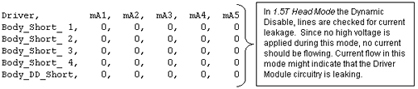 
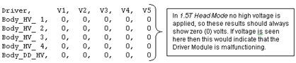 1.5T Body Mode
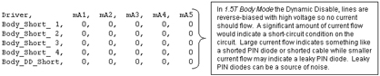 

1.5T Surface Mode

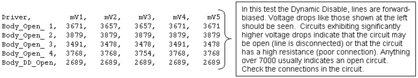 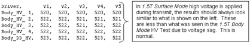 3.0T Head Mode
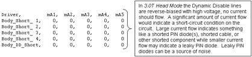 

3.0T Body Mode


3.0T Surface Mode


| ||
| Gather Load data default_tr.txt mode |
Explanation of Default_tr.txt
file contents for 1.5T and 3.0T
This file contains test data concerning the Head, Body, MNS, and 8-channel connector ‘A’ (ConA) TR Bias circuits. See the comments to the right of each section of data for an explanation of what is being checked. Note that a small amount of variation between samples is not unusual. See the comments to the right of each section of data for an explanation of what is being checked. 1.5T Output File


3.0T Output File


| ||
| Gather Load Data default_MC.txt mode |
Explanation of Default_mc.txt
contents
Open mode displays the current measured when reverse bias (always –5 VDC regardless of selected voltage) is applied to the LPCA circuitry and the circuitry of any coil is attached to the LPCA. Short mode displays the current measured when forward bias (in this case the selected voltage of +3, +5, or +7 VDC) is applied to the LPCA circuitry and the circuitry of any coil attached to the LPCA. The measured currents will vary based on the coil type and selected voltage. If no coils are connected to the LPCA and this test is run there are, however, typical measured currents that one can expect to see. In this state, as long as +5 VDC is the selected voltage, one should expect to see from –130ma to –150ma in the Short mode and between +155ma to +175ma in the Open mode. Values much greater than the typical values may indicate circuit damage or a short-circuit condition somewhere in the bias path while values much less than the typical values may indicate circuit damage or an open-circuit (maybe a disconnected cable?) condition somewhere in the bias path. Refer to the System Block Diagrams to help isolate the fault if troubleshooting one of these two scenarios. Run this test to troubleshoot intermittent problems and collect baseline data on any new surface coil. Stored surface coil data can be retrieved in the future and compared to current values for troubleshooting purposes. Connect any surface or phased-array coil to the LPCA adapter. Select the TR voltage normally used with the coil (5 Volts is typical but picking the wrong voltage won’t cause damage), specify a unique file name (if desired) in the Output File Name box that matches the name of the coil, and then run the test. The files are saved to /usr/g/service/log. The path and filenames are reported in the status window after the test is completed. An Internal or External Un-blank signal can be specified for use. The Internal Un-blank is generated inside the DM but cannot be used outside the DM. The External Un-blank (RS-422 differential signal) can be supplied by the FE between pins 1 and 6 at the J19, 9-pin, sub-D port. Note:
Please be aware that the test can only check as many multicoil lines as the site is equipped to support (typically 8; 0 - 7). The files report values for up to 32 channels but only the values that correspond to an actual line are valid. The remaining lines are for future use and the values listed for these are invalid. Also, be aware that, even with no coil connected, the multicoil switching hardware draws between –130ma to –150ma of current in Short mode and between +155ma to +175ma of current in Open mode when 5 volts is selected. The Short mode currents will not match the typical stated values if +3 or +7VDC is selected instead. Current flows (it is much greater than zero) during the Short mode (reverse bias) portion of the test due to the diode switching scheme used in the LPCA hardware. Remember that the measured current values will tend to vary from coil to coil. Baselining a new coil for future reference is a good practice. Individual coils in an array generally have current draws that are somewhat similar and usually, but not always, can be compared one to another. The information below is actual results from running Gather Load Data and reviewing default_MC.txt.Case History: Faults When Using MRI PA Extrem SM Coil | ||
| PIN | SIGNAL NAME / DESCRIPTION | PIN | SIGNAL NAME / DESCRIPTION | ||
| MC1 (J5) | MC2 (J10) | MC1 (J5) | MC2 (J10) | ||
| 1 | MC_DRIVE0 | MC_DRIVE16 | 20 | AGND | AGND |
| 2 | MC_DRIVE1 | MC_DRIVE17 | 21 | AGND | AGND |
| 3 | MC_DRIVE2 | MC_DRIVE18 | 22 | AGND | AGND |
| 4 | MC_DRIVE3 | MC_DRIVE19 | 23 | AGND | AGND |
| 5 | MC_DRIVE4 | MC_DRIVE20 | 24 | AGND | AGND |
| 6 | MC_DRIVE5 | MC_DRIVE21 | 25 | AGND | AGND |
| 7 | MC_DRIVE6 | MC_DRIVE22 | 26 | AGND | AGND |
| 8 | MC_DRIVE7 | MC_DRIVE23 | 27 | AGND | AGND |
| 9 | MC_CABLE_PRESENT_O | MC_CABLE_PRESENT_O | 28 | NO CONNECT | NO CONNECT |
| 10 | NO CONNECT | NO CONNECT | 29 | MC_CABLE_PRESENT_I | MC_CABLE_PRESENT_I |
| 11 | NO CONNECT | NO CONNECT | 30 | AGND | AGND |
| 12 | MC_DRIVE8 | MC_DRIVE24 | 31 | AGND | AGND |
| 13 | MC_DRIVE9 | MC_DRIVE25 | 32 | AGND | AGND |
| 14 | MC_DRIVE10 | MC_DRIVE26 | 33 | AGND | AGND |
| 15 | MC_DRIVE11 | MC_DRIVE27 | 34 | AGND | AGND |
| 16 | MC_DRIVE12 | MC_DRIVE28 | 35 | AGND | AGND |
| 17 | MC_DRIVE13 | MC_DRIVE29 | 36 | AGND | AGND |
| 18 | MC_DRIVE14 | MC_DRIVE30 | 37 | AGND | AGND |
| 19 | MC_DRIVE15 | MC_DRIVE31 | - | - | - |
SRI Datapath Tests
Refer to Figure 8. These diagnostics test the communication paths between the internal sections of the SRI. Refer to Table 3 for test descriptions.

| TEST NAME | TEST DESCRIPTION |
| SRI PWM | This test verifies that the Pulse Width Modulator is converting pulses to analog voltages correctly. |
| SRI RAM | SRI RAM Test (Fatal) – On power up, the last 512 bytes of RAM, locations FE00H -FFFFH are tested without destroying the application contents of the RAM. The SRI interrupts are disabled for this test. These locations are tested one at a time. The contents of a location are read, inverted, and written back to the location. The location is read again and compared to the value written. The original contents of the location are then written back to the location that has been tested. |
| SRI Encoder Voltage | Encoder Voltage Test – This test verifies that the voltage across the encoder (measured at SRI) is >4.0V. |
| SRI SCP Loopback | This diagnostic verifies that SRI serial communication path on SCP
board in the MGD chassis is working correctly. The STIF board and the actual
SRI are not tested. The test executes the following steps:
If the Loop back fails, the SCP board is the most likely failure. |
| SRI STIF LoopBack | Tests the loopback of data across the STIF board. The test executes
in these steps:
|
| SRI Register | This diagnostic causes the SRI to run its internal register test routine. After the SRI completes this test it will send a Pass/Fail result back to the SCP. |
| SRI EEPROM | The SCP command the SRI to run a checksum on the SRI's internal EEPROM chip. When the SRI completes the test it will return a Pass/Fail result back to the SCP. If this test fails with a NO-RESPONSE type error, use the SRI STIF Loopback test to determine if the Problem is in the SRI module or the Fiber Optic connection. |
SSM Board Level Diagnostics
These diagnostics only check the RF Interface and Power Monitoring functions of the SSM. The Driver Module now handles all TR and DD biasing. These tests do not check hardware external to the SSM. See Figure 9 below.
TR Dynamic Disable Power supply Regs and Power Monitor Communication Test are not used in 3.0T systems.
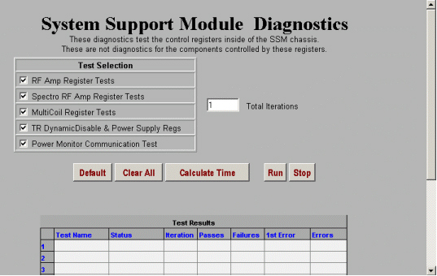
See Table 4 for an overview of each of the tests.
| TEST NAME | TEST DESCRIPTION |
| RF Amp | Test time is ~6 seconds. This test verifies the operation of the MDS Link and the presence of the RFI and Analogic amplifiers. To verify the presence of these items, the Command Register is addressed and read by the SPI via the MDS. No additional tests are used. This test is only valid on systems that do not have an RFS Cabinet or Amplifier Support Controller. |
| Spectro RF Amp |
Note:
Test time is ~6 seconds. This test verifies the operation of the MDS Fiber Optic Link and the presence and operation of the Spectro RF Amplifier Interface register on the SSM CPD Board. The Command Register is addressed and read by the SPI on the SCP Board via the MDS. The functionality of the Spectro RF Amplifier register is confirmed by reading the register for a specific pattern. This test is only valid on systems that do not have an RFS Cabinet or Amplifier Support Controller. This test is present only on systems with the spectroscopy option. |
| Multicoil (Not Used) | This function is now performed by the Driver Module. See Driver Module Diags. |
| TR Dynamic Disable & Power Supply (Not used) | This function is now performed by the Driver Module. See Driver Module Diags. |
| Power Monitor | Test time is ~5 seconds. This test verifies the operation of the MDS Fiber Optic Link and the presence and operation of the CPD Board. To verify its presence, the Command Register of the CPD Board is read. To verify the functionality of the registers, a set of Multicoil Register tests are run simultaneously with patterns AA, 55, 33, 0F. Any errors are logged to indicate the failing register. This test is only valid on systems that do not have an RFS Cabinet or Amplifier Support Controller. |
Gradient Diagnostics
The functionality of the Gradient hardware is directly exercised through running these diagnostics. See Figure 10 below.

Refer to the Gradient Driver Tests in .
| Test Name | Test Description |
| Grad Static test | Test begins with the re-execution of the Power-up memory/register test, allowing the user to troubleshoot Power up failures without power-cycling the GP board. Static Test then executes a Local GP Board Reference Voltage Check to confirm proper voltages. In TwinSpeed systems, the user can execute both gradient modes. |
| Fidelity tests | This test is designed to verify accuracy, stability and symmetry of the gradient amplifier outputs. A ramp-sampled EPI readout waveform is generated on each axis, separately for 100 shots with 64 views in each shot. Output values are judged pass or fail. In the event of a failure, the details of the failure can be seen in the error log. This test exercises only the gradient subsystem and the gradient coil. No RF signals or fiber optic signals are used in the analysis. It is recommended that this test be performed to isolate the gradient subsystem from the remainder of the system, specifically to troubleshoot SPT failures or IQ artifacts. |
| Hammer test | SCP programs the WARP to send out test data. WARP sends the test data to STIF. STIF forwards data to GP over the fiber link. GP verifies the data and sends test results to SCP via CAN link. |
| Hysteresis test | The Hysteresis test will measure the magnitude of the hysteresis produced by the current sensor located in the gradient amplifiers. Hysteresis can lead to the perception of unstable gradient DC offsets, and may affect the performance of the Supercon Shim coil. This test generates large currents, both positive and negative, and measures the resulting secondary current following the pulses. The difference of the two measurements represents the worst case hysteresis window, and thus the total amount of variation that might appear as unstable gradient DC offsets. Outputs are judged as pass/fail. |
| ECC verification test | The gradient ECC Verification test provides a means to diagnose hardware problems in the GP3 ECC DAC’s and associated circuitry. Gain and offset of ECC circuitry for each axis is measured and compared to ideal values. A single combination of ECC time constant and gain is loaded. A simple input step function is applied. The resulting analog output is recorded and compared to a computed ideal response model. All collected data must fall within a 5% window around the ideal response for a diagnostic success. The test is performed on 3 axes independently. Gradient Amplifiers are disabled during this test. |
RRF-DIF CAN Functional Diagnostic
These tests, run from the SCP, verify features of the RRF through the CAN-Link. See Figure 11 below.

| TEST NAME | TEST DESCRIPTION |
| IO Status | Verifies various RRF values, states: RF Out switch state, 20Mhz clock, Rx Signal detect, Tx Ready, Link Ready, GB State, 3.3V present, 5.0V present, Feeder Diag state, Loopback DIag state, and FPGA reset state. |
| Query A2D Values | Verifies the RRF-DIF Analog to Digital 3.3V and 5.0V levels. |
PHPS Functional Diagnostics
The PHPS (Patient Handling Power Supply) Functional diagnostics checks the status of the different power supplies in the PHPS module via CAN communication.

| TEST NAME | TEST DESCRIPTION |
| IO Status | The test will check the status of the table DC Supply, Bore Light, Bore Vent, Alignment Light, Table Motor, Motor Amplifier, 8 volt supply, 3.3 volt supply, 5 volt supply. The Power Supplies will not come up as red for failures. |
| Download Amp Config | This utility will open the /w/config/phps_config.cfg file and download its contents to the PHPS Motor Amplifier. This will change the amplifiers characteristics and could result in errors in table movement if the config file is corrupted. |
| Upload Amp Config | This utility will upload the characterization of the PHPS Motor Amplifier and dump it to the /usr/g/service/log/phps_data.txt file. Analysis of the file requires knowledge of the Motor Amplifier, but it could be compared with the contents of the /w/config/phps_config.cfg file to verify the contents od the Amplifier. |
| Reset Amp Motor | This Utility will reset the Motor Amplifier. This might be required if the Amplifier has been reloaded with a new configuration file or if amplifier communication failures are encountered. |
| Amp Realtime Data | This utility will print out realtime data from the Motor Amplifier. The data printed on the screen is Temperature, Command Velocity, Actual Velocity, Commanded Current, and Actual Current. This utility is useful to look at the data while the table is moving to determine any possible failures. |
UPM Functional Diagnostics
The UPM (Universal Power Monitor) Functional diagnostics checks the status of the supplies via CAN communication. This only applies to systems equipped with an Amplifier Support Controller (UPM).

| TEST NAME | TEST DESCRIPTION |
| IO data | The test will check the status of: Chassis Power Supply, Chassis Power Supply Temperature, Isolated 5 volts, FPGA initialization Flash Power, RF NB Board Presence, RF MNS Board Presence, RF NB Cable Presence, RF MNS Cable Presence, Unblank Cable Presence, RF NB Negative 12 volt Status, RF MNS Negative 12 volt Status. |
| Analog data | This Diagnostic reads the Power Supply Information from the UPM board every 5 seconds for the specified Test Duration (max 300 secs). No error messages will be logged for failing power supplies since the Applications Code will be logging these errors automatically. |
MDS Diagnostics
This test provides a means for check the functionality of the Multi-Drop Serial (MDS) Link. See Figure 14 below. The MDS Link is currently the primary means of communication between the System Cabinet and the other cabinets in the MR system. The MDS Link is only used on systems upgraded to EXCITE HD equipped with an SSM.

| TEST NAME | TEST DESCRIPTION |
| MDS Link & Polling Tests | Test time is ~17 seconds. These tests verify that the MDS fiber optic circuit is complete, and it checks the initial status of the peripherals presently on the link. The test first checks the serial port on the SPI processor by transmitting test patterns (AAH, 55H, 33H, 0fH) and verifying them as they return from the loopback. Next, the SPI sends out four data bytes in succession to ensure that the MDS link is complete. An error message is logged if either test fails. The polling test verifies the operation of the GP Board on the MDS Fiber Optic Link. The SPI addresses only two MDS Fiber Optic Link boards at a time. If the GP does not transmit an error packet back to the SPI within two seconds, the test fails, and an error is logged. |
| MDS STIF Loopback Test | Checks that the data received by the STIF from the MDS Link is the same data that was initially transmitted out on the MDS Link. |
Shim Supply Diagnostics (Only Available if Optional High Order Shim is Installed
These diagnostics allow setting of currents on various High Order (HO) Shim channels, and reading of these currents. In addition, various tests allow the user to determine the functionality of the HO Shim Circuit and the health of the supply. See Figure 15.
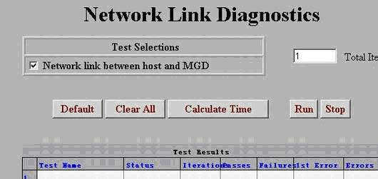
| Test Name | Description | |
| Set Current Test | By selecting the Set Current Test, the user can input currents in Amps in any of the 6 possible HO Shim Channels. Note that Channel 2 is not active as there are only 5 resistive coils in the gradient coil. By typing in current for each channel and then run, these currents will be applied to the coil. Current entries must remain between –4 and 4 amps per channel and less than 8 amps total. | |
| Read Current/Voltage | The actual current in each channel will be written in the Test Results section when this diagnostic is run. This is the amount of current measured by the supply when the diagnostic was run. | |
| Shim Circuit Continuity Check | This diagnostic applies 1 amp to a channel then reads the measured current on all channels. It then cycles through applying current to each successive channel. The check will indicate if there are any channels that are open or if there are any channels that have a short between coils. In general, it can be used to determine if the HO Shim circuit is connected and isolated. Channel 2 will always indicate an OPEN as it is not currently used. | |
| Read Channel Setpoint | This diagnostic lists the current setpoints the shim supply is operating at. It DOES NOT display measured data, only the requested setpoints currently in the system. The setpoint is listed in mAmps. | |
| RTD Data | Not Applicable. This data is for future use and its data is currently meaningless. | |
| Analog Data | Analog data provides voltage and temperature measurements that are being monitored by the HO Shim Supply. There are currently no specifications for these values; however, the diagnostic can be used to roughly determine if the power supply is functional. Typical readings are below: | |
| Analog Input | Value | |
| Board 5.0 vcc | 5.05 | |
| Board Temp (power) | 30.9 | |
| Board Temp (RTD) | 30.0 | |
| Heatsink Temp (inlet) | 25.0 | |
| Heatsink Temp (outlet) | 26.3 | |
| Board AGND Ref | 0.00 | |
| Board 2.5 vcc | 2.49 | |
| Positive 31V Rail | 30.868 | |
| Negative 31V Rail | -30.989 | |
Keyboard Data Path

| Keyboard Loopback | This Diag runs a loop back between the SPC and the Keyboard processor. The SPC requests the button status from the keyboard and checks the response to ensure that it is equal to zero. If any other value is received, the test fails. |
| Keyboard Audio | This Diag send an audio command to the keyboard processor commanding it to make the auto advance sound. The operator will have to endure that the sound is actually heard. |
PAC Diagnostics

| PAC Power Up Diags | This test cause the PAC module to repeat its power up diagnostics and log the first error found. |
| SPU to PAC Datapath | This test verifies that MGD chassis can send data to the PAC fiber optic cables. In this test the SPU on the TRF board sends serial data to the STIF board where it is sent the PAC fiber optic cable. The PAC inverts the test data and sends it back. The SPU verifies that the data is correct. |
| PAC STIF Loopback Diags | This diagnostic test the parts of the PAC serial link that exist in the MGD Chassis. This requires the use of a fiber optic loopback connector. |
| PAC ECG Leads Diags | This test causes the PAC module to perform electrical continuity test on its four ECG Leads. |
| PAC Respiratory Gain and Offset Diags | This test cause the PAC module to test its respiratory gain and offset circuits. |
Fiber Optic Repeater Data Paths

| SRI Fiber Optic Repeater Loopback Test | This diagnostic tests the Scan Room Interface Serial Data path form the MGD Chassis to the Penetration Panel. Fiber Optic Repeater Board jumper must be in the “B” position. |
| PAC Fiber Optic Repeater Loopback Test | This Diagnostic tests the PAC serial Data pat from the MGD Chassis to the Penetration Panel. Fiber Optic Repeater Board jumper must be in the “B” position. |
Power Monitor Diagnostics
These diagnostics test the health of the Universal Power Monitor (UPM). The UPM RF Detector Board, UPM Processor Board and Power Supply are all tested. See Figure 19. This only applies to systems equipped with an Amplifier Support Controller (UPM).

| Test Name | Test Description | |
| I/O Data | This diagnostic gives the current status
for both UPM 1 and UPM 2. It states the Present (Not Present) for the following items: Isolated 5 Volts, Flash Power, RF NB Board, RF MNS Board, RF NB Cable, RF MNS Cable Unblank Cable, RF NB Neg 12V, RF MNS Neg 12V. All items should always be present expect the MNS items. MNS should only be Present if the MNS option is installed at the site, if the MNS option is not installed, these items should be listed as Not Present. In addition, the diagnostic checks the operation of the Chassis Power Supply and the Chassis Power Supply Temperature, both of these should be result in Operational. Finally, this diagnostic checks for the FPGA initialization, the FPGA is on the UPM Processor board. | |
| Analog Data | Analog data lists voltages and temperatures found on the Processor and RF Detector boards for both UPM 1 and UPM 2. RF Detector Board for the MNS Amp do not apply if the MNS option is not installed in the system. No specifications exist; however, typical values follow (UPB = UPM Processor Board; RFNB = RF Detector Board NB Amp; RFBB = RF Detector Board MNS Amp): | |
| Analog Input | Value | |
| UPB NEG 12V | 11.955 V | |
| UPB POS 12V | 11.999 V | |
| RFNB POS 12V | 11.985 V | |
| RFBB POS 12V | 11.985 V | |
| UPB POS 12V | 5.086 V | |
| RFNB POS 5V | 5.069 V | |
| RFBB POS 5V | 5.069 V | |
| UPB POS 3.3V | 3.372 V | |
| RFNB POS 3.3V | 3.376 V | |
| RFBB POS 3.3V | 3.376 V | |
| UPB POS 1.5V | 1.500 V | |
| UPB POS 1.65V | 1.654 V | |
| RFNB VREF | 4.097 V | |
| RFBB VREF | 3.900 V | |
| RFNB Board Temp | 41.204 C | |
| RFBB Board Temp | 41.204 C | |
| Get Raw Data | Get Raw Data writes the current data saved in the UPM to two files, one for each UPM. The files are saved in /usr/g/service/log directory and are called _upm1.txt and _upm2.txt. The data in these files contains power readings and psd download values. This is the true raw data the UPM uses to determine if the patient exceeded maximum allow SAR. | |